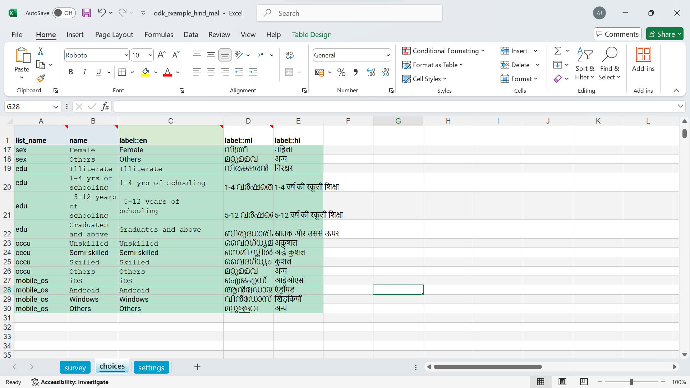

4 Digital Data Collection using ODK
4.1 Introduction to Digital Data Collection
Digital data collection methods have revolutionized the way we gather, store, and analyze information, especially in fields like healthcare, public health, and research. Traditional paper-based methods are increasingly being replaced by digital tools that offer advantages such as real-time data capture, improved accuracy, and efficient data management.
One widely used tool in this space is Open Data Kit (ODK). ODK is an open-source suite of tools that enables data collection using mobile devices. It allows users to create forms, collect data offline in the field, and later synchronize it with a server when an internet connection is available. With ODK, researchers and clinicians can capture diverse types of data, such as text, numerical entries, GPS locations, images, and audio, making it a versatile choice for many sectors.
In this chapter, we will explore the basics of digital data collection with ODK, covering the setup, form design, and practical implementation. The goal is to provide a solid foundation for transitioning from paper-based methods to efficient and scalable digital tools.
4.2 Basics of Open Data Kit (ODK)
ODK enables you to design dynamic forms for collecting data wherever you are. With ODK, you can:
Create highly customizable forms that include features like photos, GPS coordinates, skip logic, calculations, external datasets, multiple languages, and more.
Gather data offline using either the mobile or web app, with the ability to sync forms and submissions as soon as an Internet connection becomes available.
Easily analyze your data by exporting it as a CSV or connecting ODK to tools like Excel, Power BI, Python, or R for live-updating dashboards.
ODK is trusted by researchers, field teams, and professionals for gathering critical data. Here’s how you can get started.
4.3 Steps to Get Started with ODK
4.3.1 Set Up a Central Server
The first step is to set up a server to manage your forms and data. The easiest way is by using ODK Cloud, the official managed hosting service. If you prefer to manage your own server, you can follow the self-hosting guide.
4.3.2 Design Your Form with XLSForm
Use XLSForm to design your data collection form in Excel or Google Sheets. This lets you include features like skip logic, GPS, images, and even multiple languages, tailoring the form to your needs.
4.3.3 Upload Your Form to Central
Once your form is ready, upload it to the Central server. This makes your form available for use in the field and ready for data collection.
4.3.4 Get the ODK Collect App
Download the ODK Collect app from the Google Play Store. This app allows you to fill out forms offline, making it perfect for remote data collection.
4.3.5 Link Collect to Central
After creating an App User in Central, connect the Collect app to your server by scanning the QR code provided by Central. This will sync your forms and allow data submissions directly to the server.
4.3.6 Start Collecting Data
In the Collect app, select “Fill Blank Form” and begin entering data. The app works offline and will automatically sync your data to Central when you’re back online.
4.3.7 Analyze and Export Your Data
Log into Central to view your collected data. You can download it as a CSV for easy use in Excel or connect it to tools like Power BI or R to visualize and analyze your data.
ODK is flexible, allowing you to store your data on your own server or ODK Cloud, making it a reliable and customizable tool for data collection projects.
4.4 Creating an XLSForm: Basics of Form Design
To create a form for ODK, you’ll use XLSForm, a simple yet powerful way to define your form in a spreadsheet. This section will guide you through the basics of XLSForm, showing you how to structure your form to collect the right kind of data.
You could download an XLSForm form this link.
An XLSForm consists of multiple sheets that work together to define how your data collection form will behave. Below are the key sheets you’ll use when designing your form and how to set them up.
4.4.1 survey Sheet
The survey sheet is where you define the questions that users will answer during data collection. It contains the essential components for your questions.
Key Columns in the Survey Sheet:
These are the essential components for creating an effective data collection form:
type: Defines the type of input (e.g., text, integer, select_one).name: A unique identifier for the question or field (used for data export).label: The question or prompt shown to the user.hint: Additional instructions or information to assist the user.required: Indicates if an answer is mandatory.relevant: Defines the logic to show or hide questions based on previous responses. default: Specifies a default answer for the question.constraint: Sets input restrictions (e.g., value ranges).constraint_message: Custom message displayed when a constraint is violated.calculation: Automatically computes a value based on other answers.
Additional Features to Enhance Your Form These features can be used to add functionality or improve the user experience:
appearance: Controls the visual style or layout of the question.trigger: Defines actions that trigger based on user input (e.g., skip logic).choice_filter: Filters the available choices based on previous responses.parameters: Passes values from external sources into the form.repeat_count: Sets how many times a group of questions should repeat.note: Adds a note or instruction for the user.image: Includes an image in the form for reference or context.audio: Includes audio files for playback during data collection.video: Allows users to record or view videos within the form.
These features provide enhanced customization options to further improve your form’s functionality and user experience. Explore them to add more advanced capabilities to your data collection process.
4.4.2 choices Sheet
The choices sheet defines the available options for questions that require selection from multiple options (e.g., select_one or select_multiple questions).

list_name: This identifies the set of choices (should match the list_name used in the survey sheet).name: The unique identifier for each choice.label: The label that will be shown to the user for each option.
4.4.3 Settings Sheet
The settings sheet contains the configuration details for the form, such as the form title, version, and other metadata.
form_title: The title of the form.form_id: A unique identifier for the form.version: The version number of the form (helps with version control).